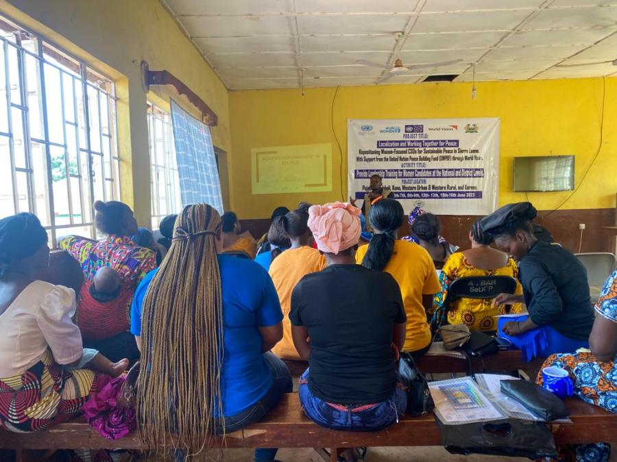
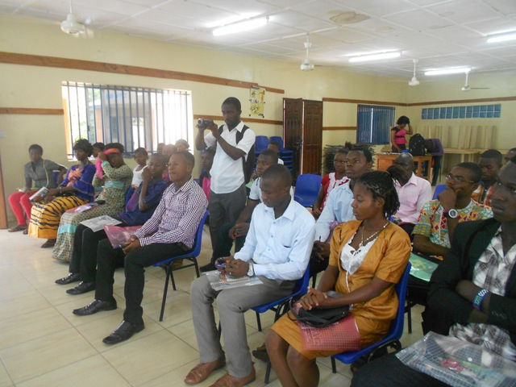
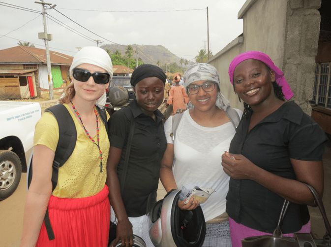
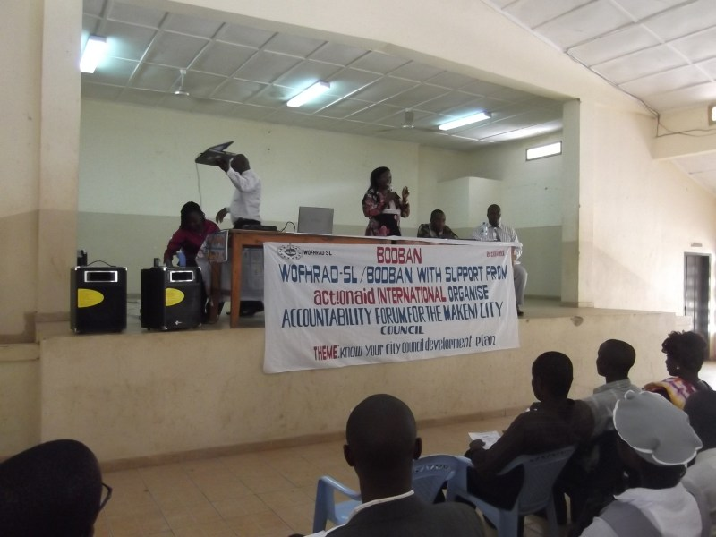
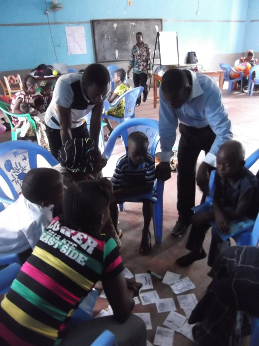
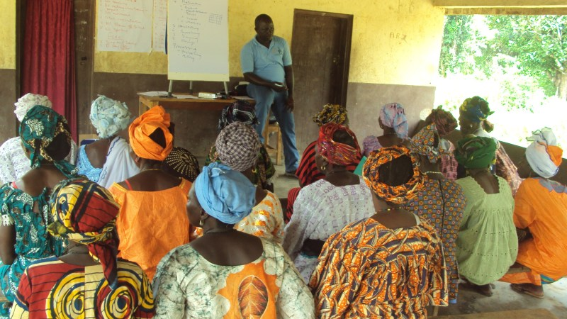

Watch, read, listen
Field reports, trainings and celebrations — the archive from the former WOFHRAD website, kept here in one place.

WOFHRAD Commences Training for Women Candidates in Six Districts
WOFHRAD-SL commenced leadership training for women candidates across six districts of Sierra Leone — Karene, Pujehun, Bombali, Kono, Western Rural and Western Urban — in collaborat…

WOMEN’S FORUM FOR HUMAN RIGHTS AND DEMOCRACY(WOFHRAD) EMBARKS ON A NATIONWIDE LEADERSHIP TRAINING FOR WOMEN CANDIDATES IN SIERRA LEONE
In collaboration with the UN Peace Building Fund, UN Women, UNDP, World Vision, and the Government of Sierra Leone, the Women’s Forum for Human Rights and Democracy is making consi…

Cross section of our young nd energic ladies joined the rest of women to celebrate the International Women’s Day (IWD)
In recognition of the International Women’s Day (IWD), WOFRHRAD-SL celebrates with the Ministry of Social Welfare, Gender and Children’s Affairs (MSWGCA), women and other Civil Soc…

Training of Activistas on Land Grab Campaign Techniques, Advocacy and Communication
WOFHRAD-SL has on the 5th June, 2015 concluded a day training for Activistas in the Bombali District, Northern Sierra Leone. The training drew participants from our three (3) opera…

Food Supply to Sponsorship Children
As As part of the response to the current Ebola outbreak in Sierra Leone, Women’s Forum for Human Rights and Democracy (WOFHRAD-SL) has been in the forefront as part of their com…

Meet our new volunteers!
Kadiatu Kargbo ” I was born and raised in Makeni. I am 24 years old and I attended the Northern Polytechnic Makeni Campus, where I obtained a diploma in Business Administration an…

Week One for our new VSO ICS Volunteers
Last week we welcomed four new VSO ICS volunteers to the team, Charlotte Langridge and Dhakshi Suriar from the UK and Kadiatu Kargbo and Emmanuel K Kamanda from Sierra Leone. We ar…

Accountability Forum with Makeni City Council
On Tuesday 5th November, WOFHRAD-SL facilitated an accountability forum with Makeni City Council on the theme ‘Know Your City Development Plan’. Over 200 people attended the forum …

Training of Mother Clubs, Child Ambassadors and School Management Committees.
Two weeks ago WOFHRAD-SL visited various villages in the Bombali District to set up Child Ambassador Clubs, Mother Clubs and School Management Committees. This week we invited two …
The Road to Kamakwie
Recently, we have traveled to Kamakwie for various field work. Unfortunately, calling it a road may be a stretch of the imagination. Parts are merely rocks, streams and rivers cros…
Promoting Rights in Schools
WOFHRAD-SL, with funding from Actionaid International Bombali LRP, have been busy promoting rights in schools to raise awareness of education and the benefits to children, parents,…

Training of women rural farmers in Bombali Shebora.
The training was a great success, with the women participating fully throughout. Read our earlier post to find out more information!…
Training 20 Rural Women Farmers.
On Monday 14th and Tuesday 15th October, WOFHRAD-SL facilitated training for 20 rural women farmers, funded by ActionAid. Topics covered included basic agronomic farming methods, s…

Public Lecture on Women’s Right to Land
On 27th September, 209 people attended a public lecture facilitated by WOFHRAD-SL, funded by ActionAid SL, on Women’s Right to Land. The lecture took place at Kamakwie in Sellah Li…
Our New VSO-ICS Volunteers.
Two new VSO – ICS volunteers arrived at WOFHRAD-SL on the 24th September 2013; Salifu (from Makeni) and Sarah (from the UK). They are both very excited about helping implement WO…
In-Service Training for 30 Community Teachers
WOFHRAD-SL with funds Action aid International undertake a week training for 30 community teachers in the Bombali District mainly Bombali Shebora, Magaimba N’duwahun and Sellah Li…
Our VSO-ICS Volunteers
Here at WOFHRAD we have been lucky enough to have 2 volunteers working with us for 3 months. Abu Bakarr Conteh (a Sierra Leonean from Makeni, known to all as ABC) and Sophie Robbin…
Women’s Rights to Land Projects
We have recently undertaken a project in conjunction with Action Aid International with the aim to raise awareness of women’s rights to own land and build capacity among women farm…
Who Works at WOFHRAD? The Staff Profiles
There are currently six members of staff working at WOFHRAD. National Coordinator and Founder – Isha Kanu-Moriba Ms. Isha Kanu-Moriba as the founder of WOFHRAD is among the few S…
Welcome to the WOFHRAD blog
What is WOFHRAD? The Women’s Forum for Human Rights and Democracy (otherwise known as WOFHRAD), is based in Makeni, Sierra Leone. Our aim is to ensure the promotion and protection…